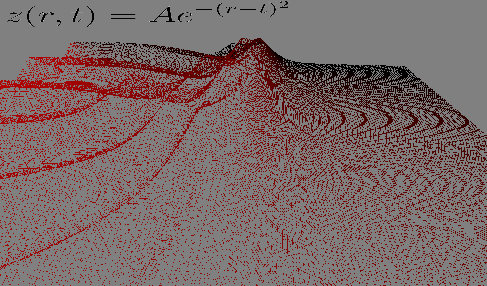

Description
This is my final project for CSC 471 Introduction to Computer Graphics. For this project I wanted to create
some sort of physics visualization tool, to combine my interests in physics and computer science. I decided
to make a tool that shows simple solutions to the wave equation. I settled on this idea beacause visualizing waves with their
respective equations is both visually pleasing and also educational. Having a good geometric intuition can
make working with equations much easier, and this tool provides that link.
Waves from multiple sources interfering constructively and destructively (preset #8):
How to Use
- A, D, Up, Down: Rotate camera angle left, right, up, down
- W, S: Move camera forward, backward.
- 1-9: Select a solution to the wave equation.
- 0: Reset to z=0, also resets t to 0.
Features
Equation
The equation in the top left is a billboard with a textue that is an image of the equation
with a transparent background. I wrote the equations in LaTeX, and then converted them to images with Roger's Online Equation Editor. The
billboard also isn't passed any information about the view matrix, making it somewhat of a Heads-up Display.
In the vertex shader its final position is simply: gl_Position = vec4(vertPos,1);
Mesh
The mesh is a 200x200 grid similar to the mesh used for the terrain landscape labs. All the points are moved closer together to make the wave seem more continuous. The height value of the mesh is then just determined by which equatinon is selected. I left the mesh as a wireframe because I felt it provided more information about the wave while not taking away much of what makes it look nice. It is easier to see exactly how the waves move in time, and since this was an educational tool, I felt it appropriate.
Video
Here is a quick video of me flipping through all the presets of the program. The ball in the middle is shown to see how the space is being distorted.